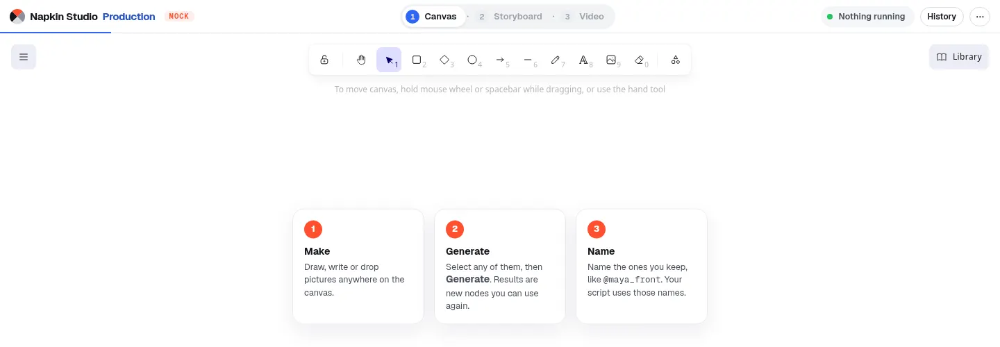

Canvas: make your characters
Draw, write or drop pictures anywhere. Then generate the characters and objects your ad needs, and give the keepers a name.
- Draw or drop. Sketch on the canvas or drop in a picture. Write in a text box inside or beside your drawing: those words become the instruction.
- Generate. Select any mix of drawings, pictures and notes, press Generate, type what you want, then Place… the result. It lands as a new picture you can use again.
- Name it. Name a picture
who_what, like@maya_front. Set as front, then Make the other views for three-quarter, side and back. - Use the names.
@maya_laughingis that one picture; plain@mayais the whole character, its front plus up to three more pictures.
